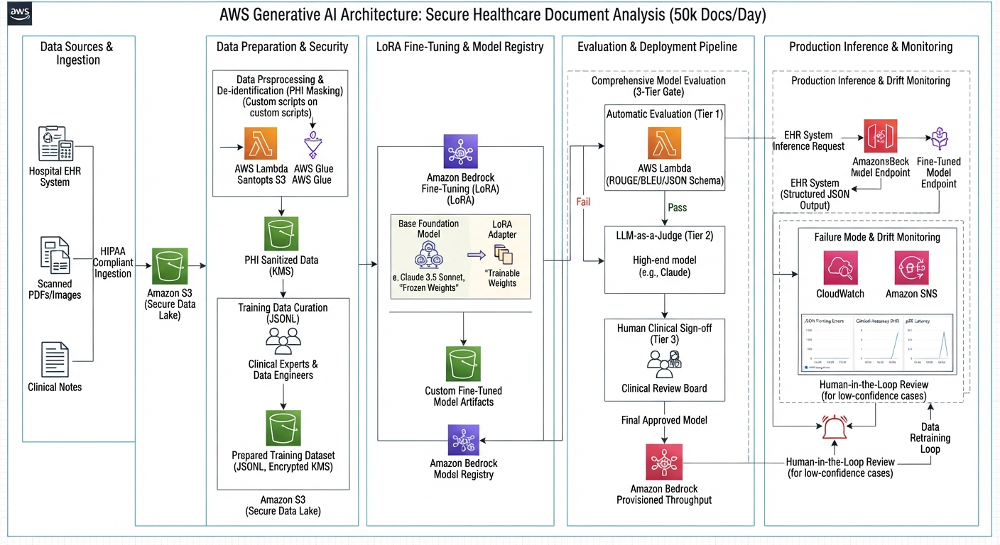

Crucial Exam Trap Note: Latency (p95) and Cost are not part of Model Evaluation. Evaluating a model only tests its quality and accuracy. Speed and expense require separate load-testing scripts and CloudWatch metrics (InvocationLatency, token counts).